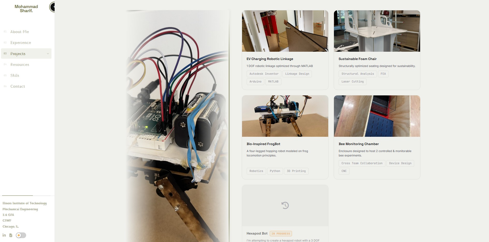

Portfolio Website
A engineering portfolio built from HTML, CSS, and JavaScript.

Initial design iteration

Current production design
Overview
As I completed more engineering projects, I realized the importance of having a dedicated platform to document and present technical work beyond a traditional resume. To create that space, I designed and developed a personal engineering portfolio website from the ground up using HTML, CSS, and JavaScript.
The site features a fixed sidebar navigation with dynamic accent color extraction from the hero headshot, immersive split-layout experience and project sections, a fullscreen lightbox gallery, a document viewer modal, and full iOS/Android compatibility — all in vanilla HTML, CSS, and JavaScript.
Design Process
The project began with researching engineering portfolio websites to identify effective ways of presenting technical content. I evaluated layouts, navigation structures, project displays, and user experience features before determining which elements would best communicate my own work.
After defining the desired functionality, I created an initial design in Figma to establish the site's structure, visual hierarchy, and overall user experience before writing any code. This planning stage simplified later development by providing a clear blueprint for implementation.
The website was then developed using HTML, CSS, and JavaScript. As the project grew in complexity, I adopted Git and GitHub to manage revisions, track changes, and safely experiment with new features. Version control became increasingly important as the codebase expanded, allowing me to revert changes and maintain stable development progress.
Throughout development, I also explored the use of AI-assisted programming tools. Claude was used as a coding assistant to help implement features, troubleshoot issues, and accelerate development when tasks extended beyond my existing knowledge. This process taught me how to write effective prompts, break down technical problems, and use AI as a collaborative tool rather than a replacement for engineering judgment.
Results
The completed website successfully provides a professional platform for showcasing engineering projects, technical skills, work experience, and ongoing development. The project expanded my knowledge of front-end web development while introducing me to practical software engineering workflows used in industry.
In addition to strengthening my HTML, CSS, and JavaScript skills, I gained experience with GitHub-based project management, deployment workflows, version control best practices, UI/UX planning in Figma, and AI-assisted development techniques. Perhaps most importantly, I learned how to effectively communicate technical work through both design and documentation.
The website remains an active project that will continue to evolve as I complete new engineering projects, gain professional experience, and refine the platform over time. Future updates will include additional project pages, expanded technical documentation, and new features that improve the presentation of my work.